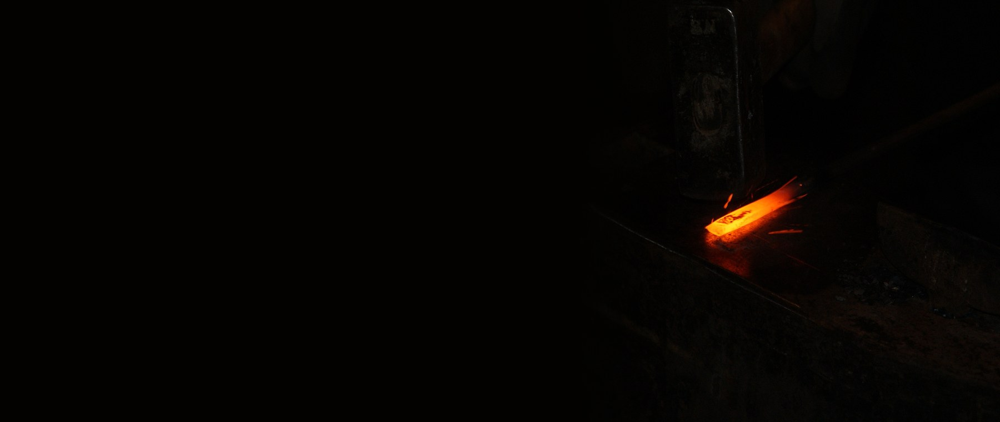
第2回
暗がりの中で、鉄は自分の色で温度を告げている。
Hi-Res Images of Chemical Elements／CC BY 3.0／Wikimedia Commons（「Red hot iron is forged with hammer and anvil」。縮小し、黒地を左に延ばして加工）
講義資料「温度計測」（エンジンシステム・次世代燃料研究室）対応。資料は撮影画像の9ページ分で、本教材は説明の順序を組み直している（対応表は設計メモ）。資料の空欄は標準的な内容で補い、補った箇所には「補足」と書いた。
右辺を $y_\infty-y=u$ とおくと $\dot u=-\dot y$ なので $\tau\dot u=-u$、すなわち $u=u_0e^{-t/\tau}$。したがって $$y(t)=y_\infty+(y_0-y_\infty)\,e^{-t/\tau}\qquad(2.0)$$ $t=\tau$ で差が $e^{-1}\approx0.368$ 倍（＝目標の63.2 %に到達）、$t=4.6\tau$ で $e^{-4.6}\approx0.01$（99 %）。2.2節で使う。
0.2 積分の加法性$\displaystyle\int_{a}^{c}f\,dx=\int_{a}^{b}f\,dx+\int_{b}^{c}f\,dx$、$\displaystyle\int_{a}^{a}f\,dx=0$、$\displaystyle\int_{b}^{a}f\,dx=-\int_{a}^{b}f\,dx$。熱電対の3法則（3章）はこの3行だけで導ける。
0.3 指数と対数の微分$\dfrac{d}{dx}\ln f=\dfrac{f'}{f}$、$\dfrac{d}{dT}\dfrac1T=-\dfrac1{T^2}$。サーミスタの感度（4.3節）で使う。
資料の冒頭は、エンジンの断面図に温度の働きを書き込んだものである。吸気負圧から最適な燃料噴射量を計算する、触媒活性と焼付き防止、早い暖気とオーバーヒート防止――どの項目も、温度が分かって初めて制御が成り立つ。圧力・流量・濃度などの多くの量は、読み取りに温度補正が必要になる（気体の密度は温度で変わる）。だから温度は計測の土台と呼ばれる。
動機：「熱い・冷たい」は感覚であり、数にするには「何をもって同じ温度というか」を決めねばならない。
温度計とは、Bの役を務める小さな物体である。温度計をAに触れさせて平衡にし、Cにも触れさせて同じ読みなら、AとCは同じ温度だと言える。資料の「大体の温度計は熱平衡状態であることを求める（相当する遅れ時間が必要）」とは、この意味である。また、熱平衡が定義されていないと目盛りがつけられないのも、同じ理由による。
資料は三つの目盛を挙げる：ファーレンハイト度 $T_F$（華氏）、セルシウス度 $T_C$（摂氏）、絶対温度 $T_K$（ケルビン）。
ファーレンハイト（資料の雑学）：1724年、ドイツのガブリエル・ファーレンハイトが提唱した。資料によれば、0 °F は −17.8 °C、100 °F は当時の計測精度が低かったため少し高めの値（人体付近）になっており、この0〜100の目盛りを12等分し、さらに8等分して96の目盛りをつくったものが °F と定義された。
STEP 1 換算式を二点から導く 温度目盛は「一次式の読み替え」で結ばれる（どちらも体積などが温度に比例するという同じ約束に基づく）ので、$T_F=aT_C+b$ とおく。水の凝固点は 0 °C ＝ 32 °F、沸点は 100 °C ＝ 212 °F（この二点は目盛の定義として広く用いられる値）。
STEP 2 係数を決める $b=32$（$T_C=0$ を代入）。$212=100a+32$ より $a=180/100=9/5$。したがって $$T_F=\tfrac95T_C+32\qquad\Longleftrightarrow\qquad T_C=\tfrac59(T_F-32)\qquad(1.1)$$ STEP 3 絶対温度 $T_K=T_C+273.15$（1.2）。絶対零度は $-273.15$ °C。目盛の間隔は °C と同じである。
確かめ：(1.1)で 0 °F → $\frac59(-32)=-17.8$ °C、100 °F → $\frac59\cdot68=37.8$ °C。資料の値と一致する（Pythonで検算済み）。資料のアメリカ気温図（The Weather Channel）の例も確かめると：
| 地点（資料） | °F | (1.1)の計算 | 資料の値 |
|---|---|---|---|
| California | 76 | 24.4 °C | 25 °C |
| Las Vegas | 92 | 33.3 °C | 33 °C |
| Chicago | 57 | 13.9 °C | 14 °C |
| Minnesotaの北の方 | 30 | −1.1 °C | −1 °C |
資料の °C は四捨五入された概数である（California の 25 は 24.4 を丸めた値で、小数に直すと 0.6 °C ずれる）。
PHOTO 1｜現実
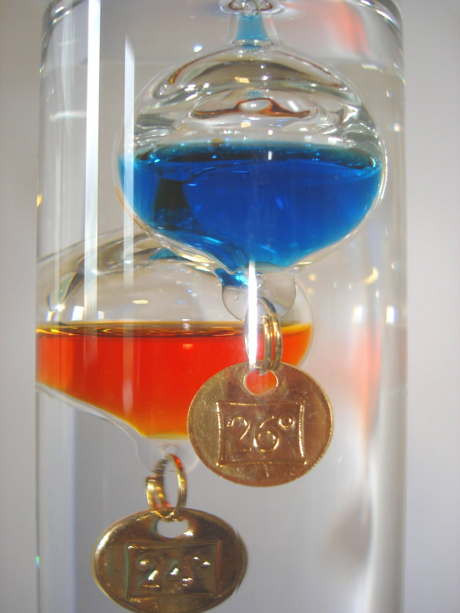
札のついた球が上下し、液体の密度変化だけで温度の目盛を読ませる。
Fenners／パブリックドメイン／Wikimedia Commons（Galileo Thermometer closeup）
MITATE 1｜見立て
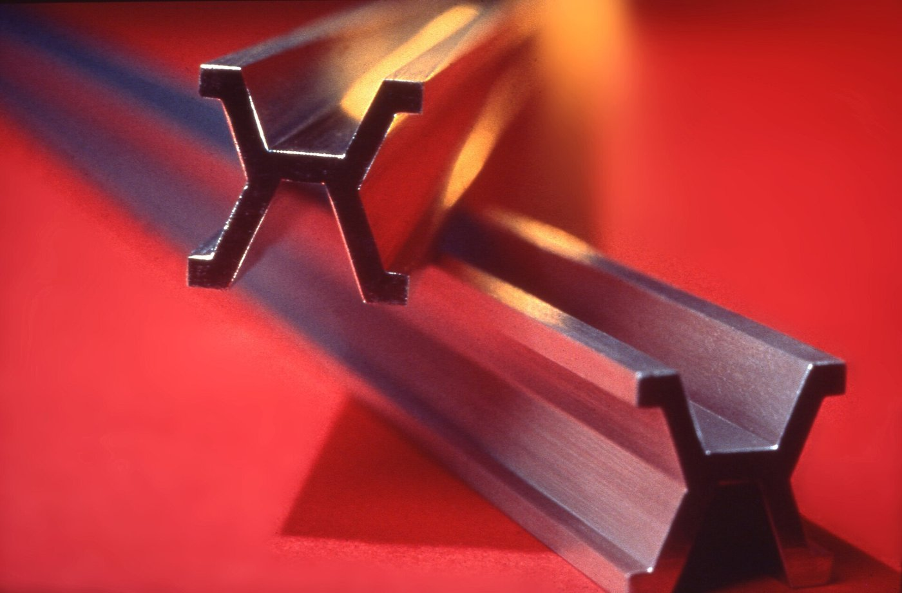
一本の棒を「基準」と決めたとき、世界の長さは目盛りの数え方に変わった。
作者不詳／パブリックドメイン／Wikimedia Commons（Platinum-Iridium meter bar）
| 方式 | 例（資料） |
|---|---|
| 接触方式 | 液体温度計、バイメタル、流体膨張温度計（圧力式）、熱電対、抵抗測温体 |
| 非接触方式 | 放射温度計 |
資料の「測定原理」は一言でいえば、温度で変わる物理量を読み、目盛りに表示したり電気信号に変換したりすることである。変わる量の例として資料は、物体の膨張・収縮、抵抗値の増減（電流の流れ具合）、磁気特性、電磁波放出量を挙げる。本教材の章立てはこの分類に対応している。
| 温度で変わる量 | 方式 | 章 |
|---|---|---|
| 体積・長さ・圧力 | 液体封入、バイメタル、圧力式 | 2 |
| 起電力 | 熱電対 | 3 |
| 電気抵抗 | 白金測温抵抗体、サーミスタ | 4 |
| 放射エネルギ | 放射温度計 | 5 |
| 磁気特性・色・軟化 | フェライト、示温塗料、ゼーゲル錐 | 6 |
資料は「センサのよしあしなどの応答性も計測精度などに依存するため、計測装置の原理を知らずして正しい計測はできない」と強調する。以降、各方式で「何が・なぜ・どれだけ」変わるのかを式で追う。
動機：温度計が示すのは、相手の温度ではなく、温度計自身の温度である。示度が相手の温度に近づくのに、どれくらい時間がかかるか。
STEP 1 熱収支を立てる 質量 $m$、比熱 $c$、表面積 $A$ のセンサを、温度 $T_f$ の流体に入れる。熱伝達率を $h$ とすると、センサに入る熱流は $hA(T_f-T)$（温度差に比例するというニュートンの冷却則）。これがセンサの蓄熱の速さ $mc\,\dot T$ に等しい： $$mc\,\dot T=hA\,(T_f-T)\qquad\Longrightarrow\qquad\tau\,\dot T=T_f-T,\quad \tau=\frac{mc}{hA}\qquad(2.1)$$ STEP 2 解く 0.1節の形そのものなので、 $$T(t)=T_f+(T_0-T_f)e^{-t/\tau}\qquad(2.2)$$ STEP 3 球状のセンサ（熱電対の先端など） 直径 $D$、密度 $\rho$ なら $m=\rho\pi D^3/6$、$A=\pi D^2$ なので $$\tau=\frac{\rho c D}{6h}\qquad(2.3)$$ 細く小さいほど速く、熱が伝わりにくい（$h$ が小さい）媒体ほど遅い。
直径1 mm の金属球（$\rho=8700$ kg/m³、$c=450$ J/(kg·K) と仮定）。空気中（$h=50$ W/(m²·K) と仮定）では (2.3) から $\tau=8700\times450\times10^{-3}/(6\times50)=13$ s、$4.6\tau\approx60$ s。水中（$h=2000$ W/(m²·K) と仮定）では $\tau=0.33$ s。数値 $h$・$\rho$・$c$ は説明用の仮定値で、実際の値は条件で大きく変わる。同じセンサでも、流体が違うと待ち時間が二桁変わる。
熱接触（資料の注記）：温度の異なる二つの物体は、接触していれば伝導・対流・放射で、接触していなくても放射で熱をやりとりし、それぞれの温度が変わって、やがて一つの共通の温度に到達する（両者をあわせた系の熱平衡が成り立つ）。つまり温度計を入れた時点で、測りたい対象の温度も（わずかに）変えている。測るとは、相手と自分が同じ温度になるまで待つことである。
資料の熱電対の注意事項は、この論理でまとめて読める：表面温度の測定は、測温部を被測温体の温度に一致させる工夫が必要（熱接触を良くする）。細い配管内の流体温度は、挿入深度が足りないと配管壁への熱伝導で示度が下がるので挿入方法に工夫が要る。高温炉内は放射熱による誤差に注意する。反応性流体では触媒反応が起きないよう注意する。そして何より「何の（どこの）温度を計測しているか」を意識する。
資料は三つを挙げる。
ガラスに液体（アルコール、水銀など）を封入する。液体の体積膨張率を $\beta$、球部の体積を $V_0$、細管の断面積を $a$ とすると、温度が $\Delta T$ 上がったときの液柱の伸びは（ガラス自体の膨張を無視して）$\Delta L=\beta V_0\Delta T/a$。球が大きく管が細いほど、目盛が読みやすい（感度が高い）。
資料は「（空欄）を接合して素子を形成」とし、構造が簡単で丈夫、簡単なオン・オフ温度制御スイッチを形成できるとする。空欄は熱膨張率の異なる二種の金属板（補足：標準的な内容）である。
曲がる量を導く：同じ厚さ $t$、同じヤング率 $E$、幅 $b$ の金属板A（線膨張率 $\alpha_1$）とB（$\alpha_2 \gt \alpha_1$）を貼り合わせる。温度が $\Delta T$ 上がると、自由なら板Aはひずみ $\alpha_1\Delta T$、板Bは $\alpha_2\Delta T$ だけ伸びたいが、貼ってあるのでそろえて曲がる。
STEP 1 ひずみを置く 接合面からの距離を $y$（Bの側を正）、曲率を $\kappa$、接合面のひずみを $\varepsilon_0$ とすると、位置 $y$ の全ひずみは $\varepsilon_0+\kappa y$。応力は「全ひずみ − 自由な熱膨張」にヤング率を掛けたもの：A（$-t\le y\le0$）は $\sigma_1=E(\varepsilon_0+\kappa y-\alpha_1\Delta T)$、B（$0\le y\le t$）は $\sigma_2=E(\varepsilon_0+\kappa y-\alpha_2\Delta T)$。
STEP 2 力のつり合い（外力なし：$\int\sigma\,dy=0$） $\kappa$ の項は $-t^2/2$ と $+t^2/2$ で打ち消し合い、$2t\varepsilon_0-(\alpha_1+\alpha_2)\Delta T\,t=0$ より $\varepsilon_0=\frac{\alpha_1+\alpha_2}2\Delta T$。
STEP 3 モーメントのつり合い（$\int\sigma\,y\,dy=0$） $\int_{-t}^0y\,dy=-t^2/2$、$\int_0^ty\,dy=t^2/2$、$\int y^2dy=t^3/3$（各層）を使うと $$\tfrac{t^2}{2}\big[(\varepsilon_0-\alpha_2\Delta T)-(\varepsilon_0-\alpha_1\Delta T)\big]+\tfrac{2t^3}{3}\kappa=0\ \Longrightarrow\ \kappa=\frac{3(\alpha_2-\alpha_1)\Delta T}{4t}=\frac{3\,\Delta\alpha\,\Delta T}{2h}\qquad(2.4)$$ （$h=2t$：全体の厚さ）。
STEP 4 先端のたわみ 長さ $l$ の片持ち板で、小さなたわみなら $x=\kappa l^2/2$（円弧の近似）。 $$x=\frac{3\,\Delta\alpha\,\Delta T\,l^2}{4h}\qquad(2.5)$$
$\Delta\alpha=7\times10^{-6}$ /K（たとえば真ちゅうと鋼の差の代表的な大きさ）、$h=0.4$ mm、$l=50$ mm、$\Delta T=100$ K：(2.4) から $\kappa=2.6$ 1/m（曲率半径 0.38 m）、(2.5) から $x=3.3$ mm。小さな力と動きなので、接点を開閉するスイッチ向きである。材料値は代表的な大きさの仮定で、実際の板材の値ではない。
(2.4)は「同じ厚さ・同じヤング率」のときの結果である。厚さや $E$ が違う一般の場合は係数が変わるが、「$\kappa\propto\Delta\alpha\,\Delta T/h$」という形は変わらない。
感温部、導管、ブルドン管などを用いた受圧変換部で構成される。感温部の中の流体が温度で圧力を変え、ブルドン管（曲がった管。圧力が上がると伸びる）がその圧力を指針の動きに変える。構造が簡単で丈夫、工業的な温度測定で最も経済的で融通がきき、広く使われている。電気を使わないので本質安全防爆の計装に適し、プロセス計装に多い。
| 方式（資料） | 封入するもの | 温度と圧力の関係 |
|---|---|---|
| 液体充満圧力計式 | 非圧縮性の液体（ケロシン、アルコール、ブタン、プロパン、水銀など）を完全に封入 | 体積が膨張しようとして圧力が上がる |
| 蒸気圧式 | プロパン、ブタン、トルエン、液体酸素、水など | 飽和蒸気圧が温度で決まる（非線形） |
| 気体圧力式 | 不活性ガス（ヘリウム、窒素など） | ボイル・シャルルの法則 |
気体式の式：体積一定のとき $pV=nRT$ から $p=\dfrac{nR}{V}T\propto T$（2.6）。出力が絶対温度に比例する、線形のセンサである。たとえば 300 K で 100 kPa に封入した気体は、400 K で $100\times400/300=133$ kPa になる。蒸気圧式が非線形になるのは、飽和蒸気圧が温度の指数関数的な増加（クラウジウス–クラペイロンの式の形）であるためで、気体式のほうが目盛が素直である（補足）。
資料の製品カタログの図には、ブルドン管の動きを歯車で拡大して指針に伝える「ギヤー式」と、管の変位を直接ダイヤルに指示する「ギヤーレス式」があること、周囲温度誤差を補正バイメタル等で補うことが書かれている。
PHOTO 2｜現実
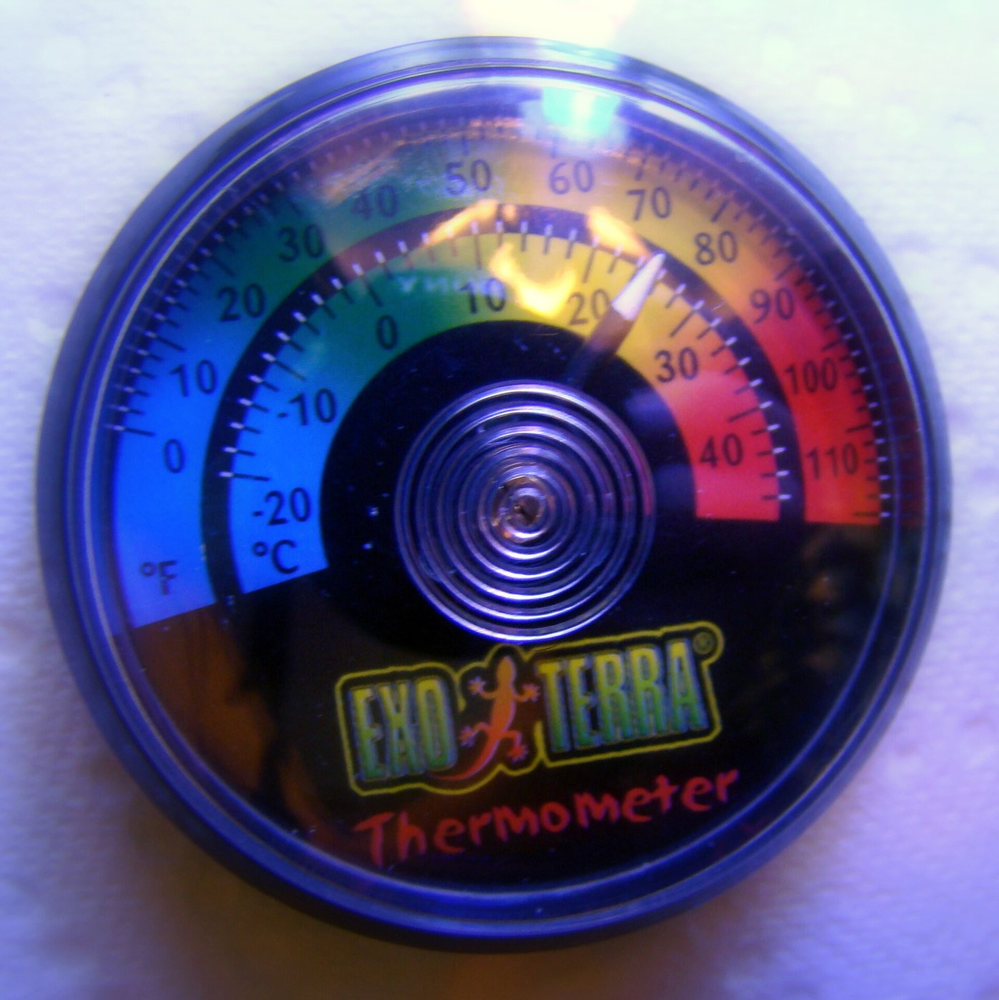
中央の渦巻が二種の金属の貼り合わせで、温度が針の回転に変わる。
Pogrebnoj-Alexandroff／CC BY 3.0／Wikimedia Commons（Bimetallic thermometer）
MITATE 2｜見立て
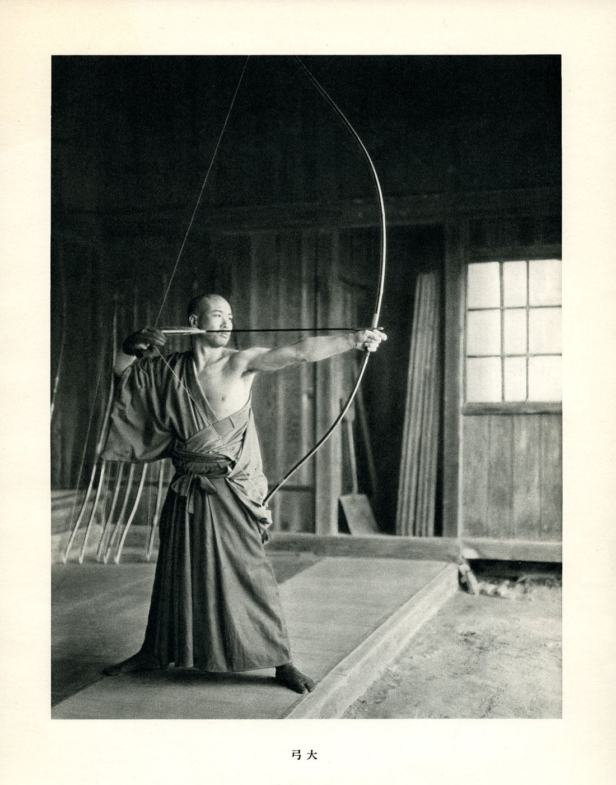
表と裏の伸びの差が、弓の反りという力の貯えになる。
作者不詳／パブリックドメイン／Wikimedia Commons（Japanese Kyudoka Draws Daikyu Longbow）
動機：抵抗で測る方式は電源を要するが、熱電対は自分で電圧を発生する。小さく、丈夫で、高温まで使える。
資料の図では、基準接点（温度 $t_1$）と測温接点（$t_2$）の二つの接点があり、A側を「+脚」、B側を「−脚」とよぶ。一端の温度を一定（原則 0 °C）に保てば、熱起電力を測ることで他端の温度が分かる。工業的に最も一般的に使われている。
式にする：各導体に、材質と温度だけで決まる量 $S(T)$（絶対熱電能）があるとし、導体の中で温度が $dT$ 変わると $dV=S(T)\,dT$ の電圧が現れる、と考える（接点そのものは起電力を生まないとする、標準的なモデル）。基準接点（$t_1$）から A を通って測温接点（$t_2$）へ、B を通って戻る向きに電圧を足すと、閉回路の起電力は $$E_{AB}(t_1,t_2)=\int_{t_1}^{t_2}S_A\,dT+\int_{t_2}^{t_1}S_B\,dT=\int_{t_1}^{t_2}\big(S_A-S_B\big)\,dT\qquad(3.1)$$ （符号のとり方は教科書で違う。資料は式を与えておらず、(3.1)は本教材の定式化である。）以下、三つの法則は(3.1)と積分の性質（0.2節）だけで導ける。
STEP 1 導体が A だけなら、(3.1)で B を A に置き換える：$E=\int_{t_1}^{t_2}S_A\,dT+\int_{t_2}^{t_1}S_A\,dT$。
STEP 2 第2項は積分の向きを逆にしただけなので $-\int_{t_1}^{t_2}S_A\,dT$。足して 0（0.2節）。途中でどんなに加熱しても、往路で現れた電圧を復路が打ち消す。
STEP 3 両脚（A、B）についても、各脚の中の温度分布 $T(x)$ は積分の変数変換 $dT=T'(x)dx$ で消える（積分値は両端の温度だけで決まる）。これが「両端以外の温度、長さや太さには無関係」の理由である。
STEP 1 脚Aの途中に C を入れる。C の両端は同じ温度 $t_3$。脚 A の積分は、$t_1\to t_3$ の区間、C の区間（$t_3\to t_3$）、$t_3\to t_2$ の区間に分かれる： $$\int_{t_1}^{t_3}S_A\,dT+\underbrace{\int_{t_3}^{t_3}S_C\,dT}_{=0}+\int_{t_3}^{t_2}S_A\,dT=\int_{t_1}^{t_2}S_A\,dT$$ STEP 2 C の区間は始点と終点の温度が同じなので積分が0。残りの二つは足して元の積分になる（0.2節）。したがって(3.1)の値は変わらない。
意味：電圧計の端子（銅）や、はんだ（接合部材）を回路に入れても、その両端が同温度なら測定に影響しない。つまり計器と接続してよい。
STEP 1 (3.1)で $t_1,t_2,t_3\to T_1,T_2,T_3$ とし、$S=S_A-S_B$ とおく：$E_{13}=\int_{T_1}^{T_3}S\,dT$。
STEP 2 区間を $T_2$ で二つに分ける（0.2節の加法性）：$\int_{T_1}^{T_3}=\int_{T_1}^{T_2}+\int_{T_2}^{T_3}=E_{12}+E_{23}$。 $\blacksquare$
使いかた：標準の熱起電力表は基準接点を 0 °C にして作られている。$T_1=t_{\text{ref}},T_2=0\,°\mathrm C,T_3=t$ として(3.2)を使い、$E_{0}(t)$ を「0 °C基準の表の値」とすると $$E(t,\,t_{\text{ref}})=E_0(t)-E_0(t_{\text{ref}})\qquad(3.3)$$
基準接点が 100 °C、測温接点が 300 °C のとき。K 型の 0 °C 基準の熱起電力は 100 °C で 4.096 mV、300 °C で 12.209 mV（NIST の ITS-90 表の値。実験で配られる表と照合すること）。(3.3)から $E=12.209-4.096=8.113$ mV。測温接点の温度の読み取りには、この 8.113 mV に $E_0(100\,°\mathrm C)=4.096$ mV を足した 12.209 mV を表で逆引きして 300 °C を得る。
信号が数 mV〜数十 mV と小さいので、後段で増幅する（資料の長所(1)：電気量に換算・検出できるので、測定・調節・制御・増幅・変換が容易）。
資料の図(a)(b)は、基準接点を氷水混合浴に入れて 0 °C に保つ回路である（(a)は銅線への接続点を二つ氷浴に入れ、(b)は一つで足りる形。(b)は中間金属の法則で説明できる：電圧計への銅線は両端が氷浴で同温）。
基準接点を一定温度に保つのは大がかりなので、資料は短所として「基準接点を必要とし、これを一定温度（たとえば 0 °C）に保つ必要があり、これ以外の場合は熱電対を延長して用いるか（高価である）、補償導線を使用しなければならない」とする。
補償導線（資料の熱電対(6)の空欄の内容）：常温を含む相当の温度範囲で熱電対と同じかきわめて類似の熱起電力特性をもつ2種の導体を1組とし、絶縁と保護被覆を施したもの。熱電対と計器の間を結ぶと、熱電対を延長したのと同じ効果で、基準接点の温度を補償し、経路での障害を防止して正確な測温ができる。
STEP 1 熱電対 A,B を、測温接点 $t_2$ から端子箱の温度 $t_a$ まで。そこから計器（温度 $t_r$）までを補償導線 A′,B′ とする。A′B′ は常温付近で AB と同じ特性だから $E_{A'B'}(t_r,t_a)=E_{AB}(t_r,t_a)$。
STEP 2 全体の起電力は $E_{AB}(t_a,t_2)+E_{A'B'}(t_r,t_a)=E_{AB}(t_a,t_2)+E_{AB}(t_r,t_a)$。中間温度の法則(3.2)で一つにまとまり、$E_{AB}(t_r,t_2)$。
端子箱の温度 $t_a$ は答えに現れない。つまり、基準接点を遠い計器側へ移したのと同じになり、高価な熱電対線を長く引かずに済む。 $\blacksquare$
補足：現在の計器の多くは、基準接点の位置の温度を別の温度センサ（サーミスタなど）で測り、(3.3)の $E_0(t_{\text{ref}})$ を電気的に足している（冷接点補償）。氷浴の代わりを中間温度の法則が務める。
| 記号（資料） | 構成材料（＋脚／−脚） | 測定温度 |
|---|---|---|
| B | Rh30 %を含む Pt,Rh合金／Rh6 %を含む Pt,Rh合金 | 600〜1700 °C未満 |
| R | Rh13 %を含む Pt,Rh合金／Pt | 0〜1600 °C未満 |
| S | Rh10 %を含む Pt,Rh合金／Pt | 0〜1600 °C未満 |
| K | Ni及びCrを主とした合金／Niを主とした合金 | −200〜1200 °C未満 |
| E | Ni及びCrを主とした合金／Cu及びNiを主とした合金 | −200〜800 °C未満 |
| J | Fe／Cu及びNiを主とした合金 | 0〜750 °C未満 |
| T | Cu／Cu及びNiを主とした合金 | −200〜350 °C未満 |
資料の表の転記（目読）。白金系（B、R、S）は高温・高価、K は汎用、T は低温に向く。
構造（資料）：(1)裸熱電対 (2)絶縁管付熱電対 (3)保護管付熱電対 (4)シース熱電対――構造的に最も広く使われ、熱電対線の周囲を絶縁物が取り囲み、最外層を金属パイプが覆う。
| 長所（資料） | 短所（資料） |
|---|---|
| (1)温度を電気量に換算・検出でき、測定・調節・制御・増幅・変換が容易 (2)比較的安価で入手しやすく、測定方法も簡便の割に精度が高く、時間遅れも少ない。寸法（線径）を自由に選べる (3)広い温度範囲を測れる |
(1)雰囲気により使える熱電対の種類に制限がある (2)±0.2 %程度以上の精度を得ることが難しい (3)基準接点を必要とし、これを一定温度に保つ必要がある (4)高温・長期間では雰囲気による劣化（酸化・還元）が進む |
応答の速さ(2)は、細い線径で(2.3)の $D$ が小さくなるため、と説明できる。
資料は、エンジンの吸気バルブの温度を、熱電対を埋め込んで測った例を載せる。計測部（表示器）と熱電対のセット、バルブの A（シリンダ側）、B（ポート側）などに熱電対を処理した写真、そして吸気負圧（mmHg）に対する各測定点（A〜D）の温度のグラフである。グラフの読み取り（図からの概数）：温度が最も高いのは中負荷（吸気負圧 約 −250 mmHg）のときで、測定点によって約 200〜250 °C 台、低負荷では低く、高負荷になるにつれて下がる。資料の考察は次の二つ：
ここで、先端のサイズ(2.3)と熱接触(2.2)の議論が効く：バルブ表面の小さな点の温度を測るには、熱電対が小さく、バルブ面と一体で熱接触が良くなければならない。資料の写真で熱電対を「バルブ熱電対処理」と呼んでいるのは、このためである。
PHOTO 3｜現実
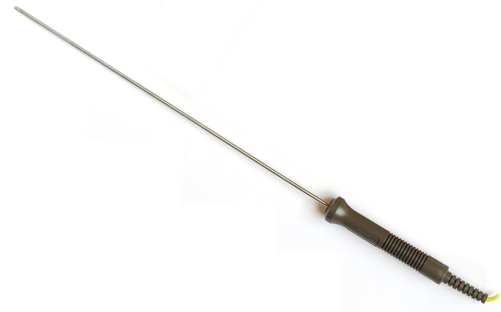
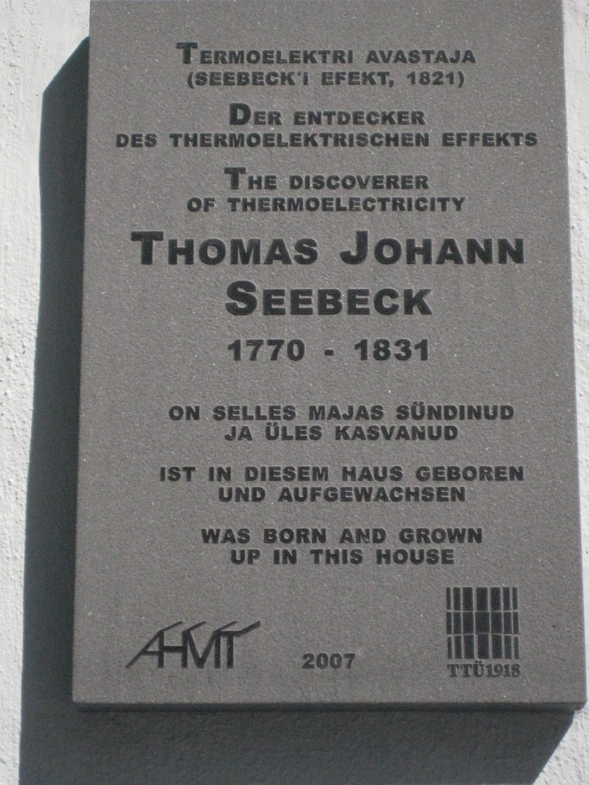
細い針のような先端が測温接点で、発見者の記念板は「1821」と記す。
左：Harke／CC BY-SA 3.0／Wikimedia Commons（ThermocoupleProbe）。右：Wilhelmy／CC BY-SA 3.0／Wikimedia Commons（Thomas Johann Seebeck）
MITATE 3｜見立て
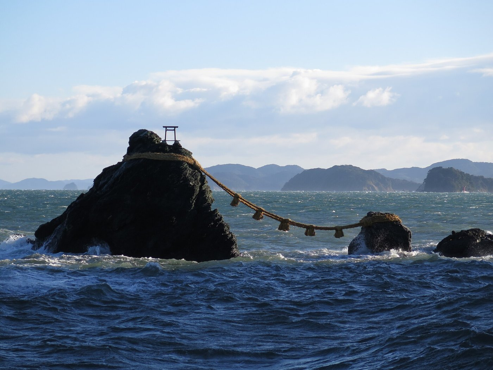
離れた二つの岩を縄でつなぐと、あいだに張りが生まれる。
Douglas Perkins／CC BY 4.0／Wikimedia Commons（Meoto Iwa rocks 01）
動機：熱電対は基準接点が要り、信号が小さい。抵抗の読みからただちに温度が求まる方式は、常温付近で扱いやすい（資料の特徴(4)）。
資料の原理（空欄を補う）：一般に金属は、温度が上がると電気抵抗が増加する。金属では温度にほぼ比例する。理由（補足）：温度が上がると原子の格子振動が大きくなり、伝導電子が散乱されやすくなるため。白金や銅などの電気抵抗と温度の間には一定の関係があり、この関係を利用して温度を測定する。
Pt100 の 100 °C：$R=100(1+0.39083-0.005775)=138.51\ \Omega$、200 °C：175.86 Ω（Pythonで検算）。逆に、$R$ から $t$ を出すには、(4.1)を $Bt^2+At+(1-R/R_0)=0$ と見て $t=\dfrac{-A+\sqrt{A^2-4B(1-R/R_0)}}{2B}$ を使う。たとえば 119.40 Ω → 50.0 °C。
感度（相対変化率）は $\dfrac1R\dfrac{dR}{dt}=\dfrac{A+2Bt}{1+At+Bt^2}$。0 °C で $A=0.39$ %/K、100 °C で 0.27 %/K と、ほぼ一定である。
種類（資料）：(a)白金：産業界で最も高精度が期待できる温度計として −200〜650 °C で広く利用される。(b)ニッケル：白金に比べ安価。−50〜300 °C 程度。(c)銅：最も安価。線形性がよく均一な素線が容易に得られるので常温付近に使うが、固有抵抗が小さく高温では酸化が進む。0〜120 °C 程度。
測るときの注意（補足）：抵抗を測るには電流を流すので、素子自身が $I^2R$ で発熱し、(2.2)の「相手の温度」からずれる（自己加熱）。リード線の抵抗も加わるので、3線式・4線式の配線でこれを打ち消す。
| 長所 | 短所 |
|---|---|
| (1)感度が大きい (2)安定度が高い（振動の少ない良好な環境で長期に安定） (3)温度と抵抗の関係がよく調べられている (4)抵抗値の読みからただちに温度が求まる。基準接点のような器具が不要で、常温付近に有利 |
(5)抵抗素子は構造が複雑で形状が大きく、応答が遅い。狭い場所の測定に不適 (6)最高使用温度が 500〜650 °C と低い (7)細い素線を使うので、機械的衝撃や振動に弱く、長期振動で断線の恐れ |
(5)は(2.3)で説明できる：形状が大きい（$D$ が大きい）ほど $\tau$ が大きい。
資料：サーミスタは半導体の感温抵抗体。いろいろな温度特性のものがある。白金測温抵抗体に比べて、(1)電気抵抗が 1〜4 桁大きい、(2)温度係数が 1 桁大きい、(3)形状が小さい。高感度で速応性のある温度計を作れるが、温度係数が大きいために広い温度範囲の測定には不適で、特殊なものを除いて 350 °C 以上の高温には使えない。
式：半導体では温度が上がるとキャリア（電子）が熱励起で増えて抵抗が下がる（負特性、NTC）。この振る舞いは経験的に $$R(T)=R_0\exp\!\Big[B\Big(\frac1T-\frac1{T_0}\Big)\Big]\qquad(4.2)$$ で表される（$B$ はサーミスタ定数 [K]、$T$ は絶対温度）。
STEP 1 感度を出す 対数をとると $\ln R=\ln R_0+B(1/T-1/T_0)$。
STEP 2 $T$ で微分（0.3節）：$\dfrac1R\dfrac{dR}{dT}=-\dfrac{B}{T^2}\qquad(4.3)$
STEP 3 数値 $B=3380$ K、$T=298.15$ K（25 °C）で $-3380/298.15^2=-0.0380$、すなわち −3.8 %/K。Pt100 の 0.39 %/K の約 10 倍で、資料の「温度係数が1桁大きい」と合う（Pythonで検算）。
$R_{25}=10\ \mathrm{k\Omega}$、$B=3380$ K（説明用の仮の値）の NTC：0 °C で 28.2 kΩ、25 °C で 10.0 kΩ、50 °C で 4.16 kΩ、100 °C で 1.02 kΩ。100 °C のあいだに抵抗が 28 倍も変わる。感度が高い反面、出力が曲線（図4.2）なので広い範囲では扱いにくい。
資料は、自動車で使われるサーミスタ温度計（センサ）として、冷却水用、カーエアコン用、モーター温度検知用、バッテリー温度計測用の写真を挙げ、エンジン制御システム（日産 SR20DE 型の図）のなかの水温センサ・排気温度センサの位置を示している。小さく安価で感度が高い、という特徴が、車載の多数点計測に向く。
PHOTO 4｜現実
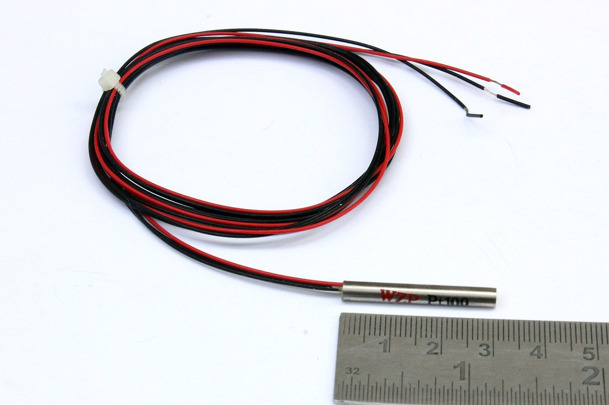
三本の線は、リード線の抵抗分を測定から差し引くための工夫である。
Suyash Dwivedi／CC BY-SA 4.0／Wikimedia Commons（3 wire PT100 Sensor）
MITATE 4｜見立て
ゲートの開き具合ひとつで、通る水の量が変わる。
Phil Champion／CC BY-SA 2.0／Wikimedia Commons（Guillotine lock gate, Library Lock, Rochdale Canal）
良く吸収する面は、同じ割合で良く放射する。光沢のある金属面は反射が強く、$\varepsilon$ が小さい。
資料：黒体の単位面積から単位時間に放射されるエネルギは温度 $T$ の4乗に比例する。 $$E_b=\sigma T^4,\qquad E=\varepsilon\sigma T^4\qquad\sigma=5.67\times10^{-8}\ \mathrm{W/(m^2K^4)}\qquad(5.1)$$ $E$ を測れば $T$ が求まる。なぜ4乗かを、黒体放射のスペクトル（プランクの式）から導く。
STEP 1 出発点 黒体の波長 $\lambda$ あたりの放射エネルギ密度（プランクの式）： $$M_\lambda=\frac{2\pi hc^2}{\lambda^5}\,\frac{1}{e^{hc/\lambda kT}-1}\qquad(5.2)$$ $h$：プランク定数、$c$：光速、$k$：ボルツマン定数。全体の放射 $E_b=\int_0^\infty M_\lambda\,d\lambda$（資料の「曲線の下部面積」）。
STEP 2 変数を替える $x=hc/(\lambda kT)$ とおく。$\lambda=hc/(xkT)$、$d\lambda=-\dfrac{hc}{kT\,x^2}dx$。
STEP 3 代入して整理 $\lambda^{-5}=(xkT/hc)^5$ なので $$M_\lambda\,d\lambda\ \to\ 2\pi hc^2\Big(\frac{xkT}{hc}\Big)^5\frac{1}{e^x-1}\cdot\frac{hc}{kT\,x^2}\,dx=\frac{2\pi(kT)^4}{h^3c^2}\,\frac{x^3}{e^x-1}\,dx$$ （$d\lambda$ の負号は積分の向きの反転と相殺する。）
STEP 4 $T$ が積分の外に出る $$E_b=\frac{2\pi k^4}{h^3c^2}\,T^4\int_0^\infty\frac{x^3}{e^x-1}\,dx$$ 積分は $T$ を含まない定数で、値は $\pi^4/15=6.4939\ldots$（数値積分でも確かめた）。よって $E_b=\sigma T^4$、$\sigma=\dfrac{2\pi^5k^4}{15h^3c^2}=5.6704\times10^{-8}$ W/(m²K⁴)（Pythonで計算）。資料の値と一致する。 $\blacksquare$
確かめ：(5.2)を数値積分した結果は、1500 K で $\sigma T^4$ と一致した（Pythonで検算）。
$\varepsilon=1$ として 300 K で $E=5.67\times10^{-8}\times300^4=459$ W/m²。温度を 2 倍の 600 K にすると $2^4=16$ 倍の 7348 W/m²。温度が少し上がるだけで放射が急増するので、高温ほど放射温度計は感度が高い。
資料：黒体の温度が高くなれば放射エネルギ全体は大きくなり、密度が最大値を示す波長は短くなる。最大の密度を示す波長 $\lambda_m$ は $$\lambda_m T=b,\qquad b=2.8978\times10^3\ \mu\mathrm{m\cdot K}\qquad(5.3)$$
STEP 1 (5.2)の対数をとる。$u=hc/(\lambda kT)$ とすると、$\ln M_\lambda=\text{(定数)}-5\ln\lambda-\ln(e^u-1)$。
STEP 2 $\lambda$ で微分して 0 とおく。$du/d\lambda=-u/\lambda$ を使うと $$-\frac5\lambda+\frac{e^u}{e^u-1}\cdot\frac u\lambda=0\ \Longrightarrow\ u=5\,(1-e^{-u})$$
STEP 3 これは数値的に解く。反復 $u\leftarrow5(1-e^{-u})$ で $u=4.9651$ に収束する（Pythonで計算）。
STEP 4 $\lambda_m=hc/(ukT)$ なので $\lambda_mT=hc/(uk)=14388\ \mu\mathrm{m\cdot K}/4.9651=2897.8\ \mu\mathrm{m\cdot K}$。資料の $b$ と一致する。 $\blacksquare$
300 K（室温）：$\lambda_m=9.66\ \mu$m（遠赤外）。3000 K（白熱電球のフィラメント程度）：0.97 μm（赤外寄り）。太陽表面（約5770 K）：0.50 μm（可視の緑）。（Pythonで検算）
資料の「鉄の色が温度の上昇とともに赤→橙→黄→白と変化する」はこの図で読める。可視光は約 0.38〜0.78 μm。温度が低いと可視域の放射は長波長側の「すそ」だけで赤く見え、温度が上がるとピークが可視域に入り込んで、青緑の成分が増えて白に近づく。
資料：光高温計、二色温度計、シリコン放射温度計、PbS 放射温度計、サーモパイル放射温度計、焦電放射温度計など。検出素子により様々。
| 検出素子（資料） | 原理 | 特徴 |
|---|---|---|
| (a) 熱電形 | 放射が入射して受光面がわずかに昇温。この温度変化を電気信号に変換 | 可視〜赤外までほぼ一様な感度。特定波長での検出能力は光電形より低い。応答は受熱面の熱容量と基盤への熱拡散で決まり遅い。冷却不要 |
| (b) 光電形 | 入射した光子が電子と直接相互作用し、光子数に比例した電気信号 | 応答が速い。感度が10〜100倍。半導体のバンド幅で決まる狭い波長帯の分光感度。液体窒素冷却が必要なものも多い |
| (c) 肉眼（光高温計） | 測温体の像と電球フィラメントの輝度が等しくなる電流を手動で合わせ、電流計で温度を読む | 赤外フィルタで 0.65 μm の波長を比べ、他の波長が混じる不確かさを減らす |
(a)の遅さは(2.1)の考え方で説明できる：熱電形は「受光面の昇温」を測る＝温度計の一種なので、熱容量が大きいと $\tau$ が大きい。(b)は温度ではなく光子を数えるので、熱の蓄積の遅れがない（補足）。
PHOTO 5｜現実
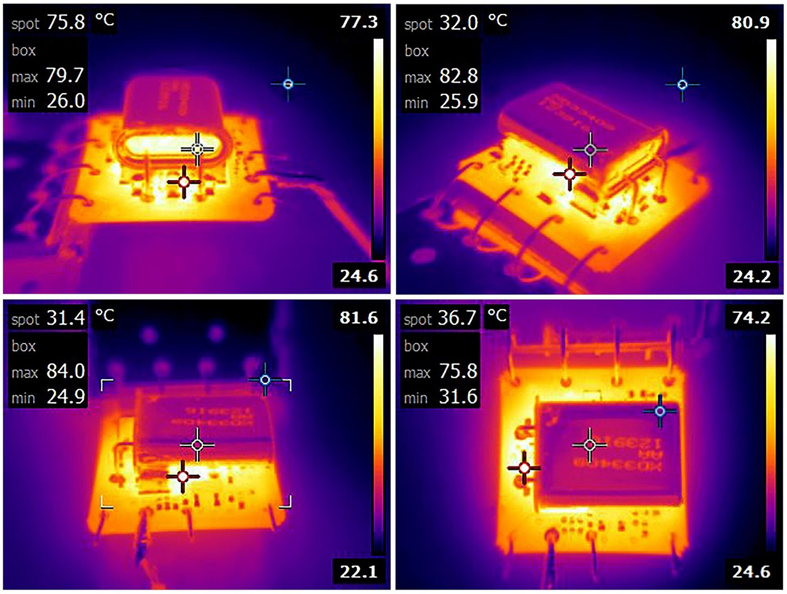
触れずに撮った熱の分布が、色の階調として画面に並ぶ。
Mister rf／CC BY-SA 4.0／Wikimedia Commons（RAKON STP2734B LF OCXO Thermal Imaging）
MITATE 5｜見立て
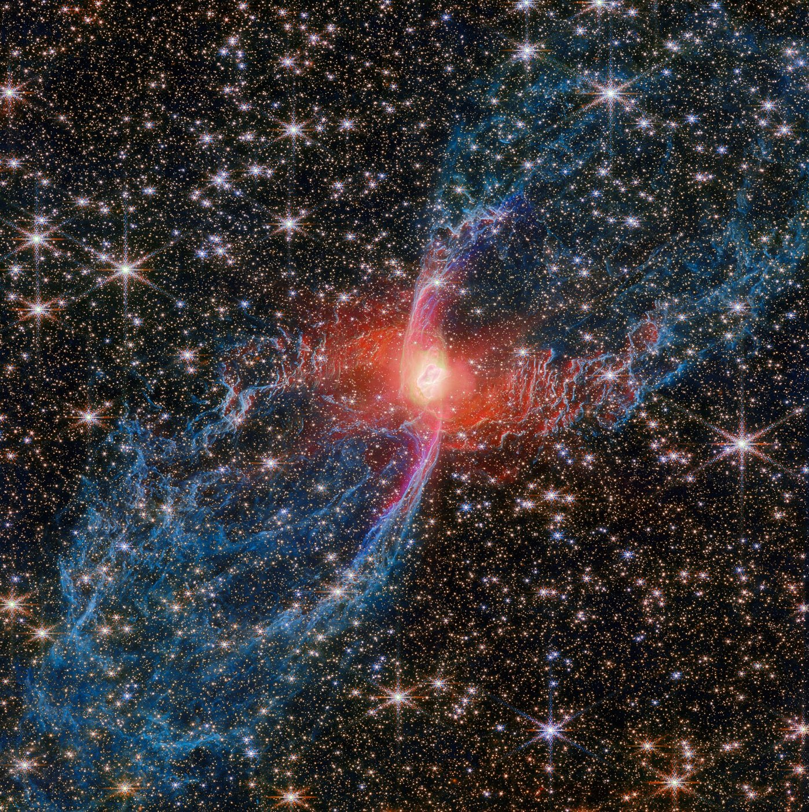
遠い星の温度は、手を伸ばせない光の色だけで読まれる。
ESA／CC BY 4.0／Wikimedia Commons（The Red Spider Nebula, caught by Webb）
資料の問い：「燃焼室の燃焼ガスの温度をどのように計測するか？」。燃焼ガスは高温で、ピストンが動き、温度が刻々と変わる。熱電対では応答が追いつかない（(2.3)の $\tau$ を思い出す）ことが、問いの背景にあると読める。
資料が示すのはクランク角度信号との同期である。クランク軸の端にロータリーエンコーダ（円盤にスリットを刻み、光源とフォトトランジスタで光の通過をパルスにする装置）を付け、
の二つの信号を出す。センサの信号をアンプを通して PC で処理する、という流れが図示されている。たとえば 2000 rpm では 1 パルスの間隔が $1/(2000/60\times360)=83\ \mu$s（クロック 12 kHz）になり、この間隔でセンサ信号をとれば、クランク角ごとのガスの状態を追える。
資料は、センサが何を測るのかを明示していない。標準的な方法として、筒内圧力 $p(\theta)$ を測り、クランク角 $\theta$ からシリンダ容積 $V(\theta)$ を幾何で計算して、理想気体の式から $$T(\theta)=\frac{p(\theta)\,V(\theta)}{mR}\qquad(6.1)$$ とする方法がある（$m$：ガス質量、$R$：気体定数。バルブが閉じている間 $m$ は一定）。エンコーダは $V(\theta)$ と圧力の同期をとる役目である。講義で別の方法が説明された場合は、そちらを優先すること。
共通点は、電気も電子回路も使わず、材料そのものの変化を温度の記録にすることである。ゼーゲル錐は、(2.2)の熱平衡の考え方でいえば「炉と同じ温度になった時点の履歴が曲がりとして残る」温度計である（補足）。
| 方式 | 読む量 | 長所（資料より） | 短所（資料より） |
|---|---|---|---|
| 液体封入・バイメタル | 体積・たわみ | 構造が簡単で丈夫 | 電気信号にしにくい |
| 圧力式 | 圧力 | 経済的、防爆 | — |
| 熱電対 | 起電力 | 安価、広範囲、小型 | 基準接点が要る、±0.2 % |
| 白金測温体 | 抵抗 | 高精度、安定 | 大きく遅い、〜650 °C |
| サーミスタ | 抵抗 | 高感度、小型 | 非線形、〜350 °C |
| 放射温度計 | 放射量 | 非接触 | 放射率の影響 |
PHOTO 6｜現実
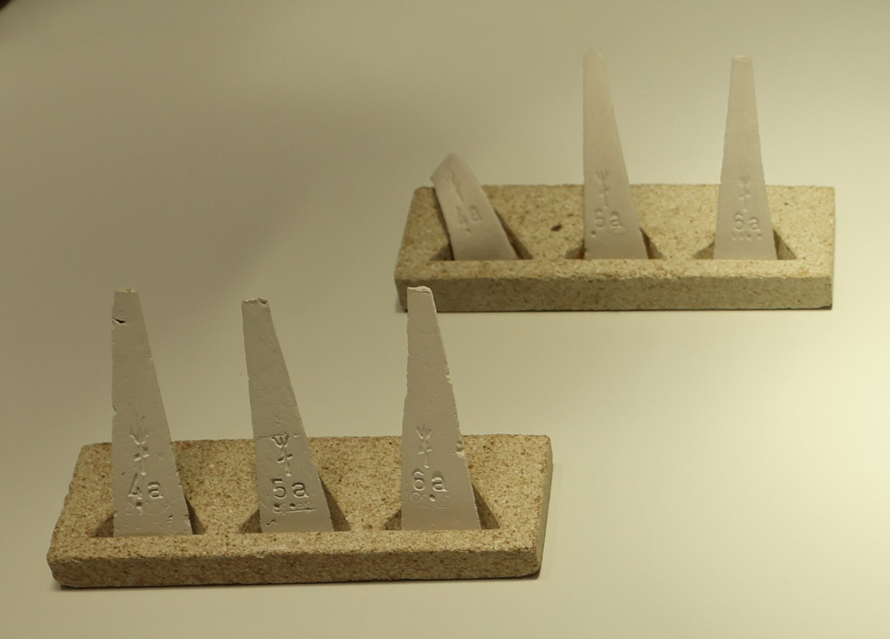
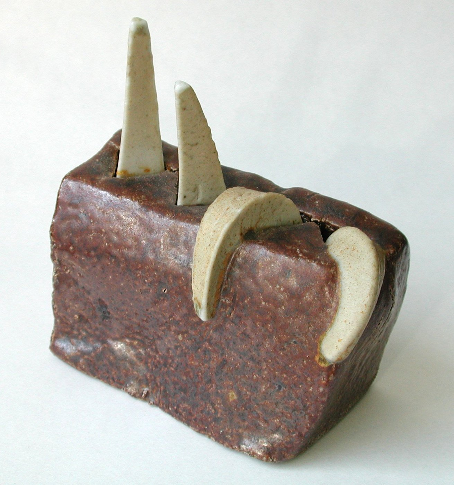
まっすぐ立った錐は、窯の中で自らの先端を折り曲げて、温度の履歴を残す。
左：Geni／CC BY-SA 4.0／Wikimedia Commons（Fired and unfired seger cones）。右：Tinux／CC0／Wikimedia Commons（Segerkegel）
MITATE 6｜見立て
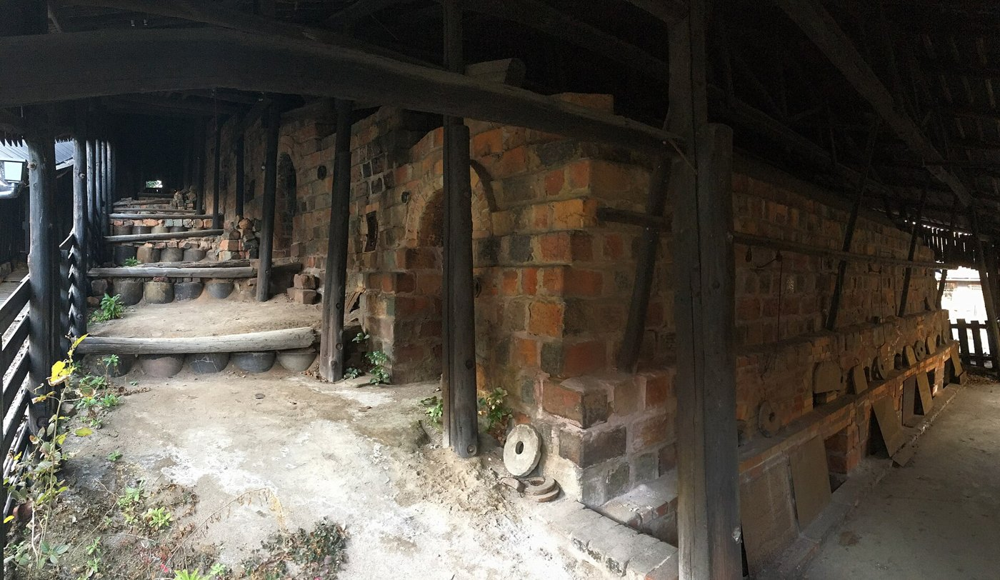
窯の列は、温度を段ごとにずらして仕上げる大きな温度計でもある。
Gryffindor／CC BY-SA 4.0／Wikimedia Commons（Noborigama Tokoname 01）
(a) −40 °C は何 °F か。(b) 98.6 °F は何 °C か。
解答
① (1.1)より $T_F=\frac95(-40)+32=-72+32=-40$ °F。（−40 は °C と °F が一致する唯一の温度。）
② $T_C=\frac59(98.6-32)=\frac59\times66.6=37.0$ °C。
K型熱電対で基準接点が 100 °C のとき、起電力 8.113 mV を得た。測温接点の温度は何 °C か。表の値は 100 °C：4.096 mV、300 °C：12.209 mV（0 °C 基準）。
解答
① (3.3)より $E=E_0(t)-E_0(100)$。② $E_0(t)=8.113+4.096=12.209$ mV。③ 表を逆引きして $t=300$ °C。（0 °C 基準の 8.113 mV から 200 °C ではない点に注意。）
Pt100 の抵抗が 130.0 Ω のとき、温度は何 °C か。
解答
① $1-R/R_0=1-1.300=-0.300$。② 二次方程式 $Bt^2+At-0.300=0$ に、$A=3.9083\times10^{-3}$、$B=-5.775\times10^{-7}$ を代入：判別式 $A^2-4B(-0.300)=1.5275\times10^{-5}-6.93\times10^{-7}=1.4582\times10^{-5}$、平方根 $3.8187\times10^{-3}$。③ $t=\dfrac{-3.9083\times10^{-3}+3.8187\times10^{-3}}{2\times(-5.775\times10^{-7})}=77.7$ °C。（直線 $t=(R/R_0-1)/A$ なら 76.8 °C。約 1 °C のずれが2次の項の分。）
放射率 0.9、温度 350 K の面が放射するエネルギ $E$ はいくらか。また、ピーク波長はいくらか。
解答
① $E=0.9\times5.67\times10^{-8}\times350^4=766$ W/m²（$350^4=1.5006\times10^{10}$）。② $\lambda_m=2897.8/350=8.28\ \mu$m（黒体としての値）。
$\lambda_m=2897.8/310=9.35\ \mu$m。（遠赤外。体温の放射を見るサーモグラフィがこの波長帯を使うことと対応する。）
絶対温度で比をとる：$T_1=293.15$ K、$T_2=353.15$ K。$p_2=120\times353.15/293.15=144.6$ kPa。（°C のまま比をとって $120\times80/20$ としてはならない。）
$E\propto T^4$ で 16 倍。$\lambda_m\propto1/T$ で 1/2 倍。
3.3節の STEP 1〜2。C の区間が $t_3\to t_3$ で積分が 0 になり、A の積分が元に戻る。
3.5節。補償導線 A′B′ が常温付近で AB と同じ特性ならば $E_{A'B'}(t_r,t_a)=E_{AB}(t_r,t_a)$。全体は $E_{AB}(t_a,t_2)+E_{AB}(t_r,t_a)=E_{AB}(t_r,t_2)$（中間温度の法則）。$t_a$ が消える。
(2.5)より $\Delta T=4hx/(3\Delta\alpha\,l^2)=4\times4\times10^{-4}\times10^{-3}/(3\times7\times10^{-6}\times2.5\times10^{-3})=30.5$ K。
$\tau\dot T=T_f-T$、$T_f=T_0+rt$。定常な遅れ $\delta=T_f-T$ は一定なので $\dot T=r$ となり、$\tau r=\delta$。$\delta=r\tau=2\times13=26$ K。厳密解は $T_f-T=r\tau(1-e^{-t/\tau})$ で、$t\gg\tau$ で $r\tau$ に近づく。時間変化する温度を測る場合、$\tau$ が大きいと系統的に遅れる。
放射量は一定：$\sigma T_{\text{ind}}^4=\varepsilon\sigma T^4$ より $T=T_{\text{ind}}\varepsilon^{-1/4}=800/0.6^{0.25}=800/0.880=909$ K。（約 109 K 高い。）
※C 段階の外部の良問（教科書の章末問題や公開された演習問題）は、まだ調べていない。出典のある問題を載せたい場合は、あとで追加する。